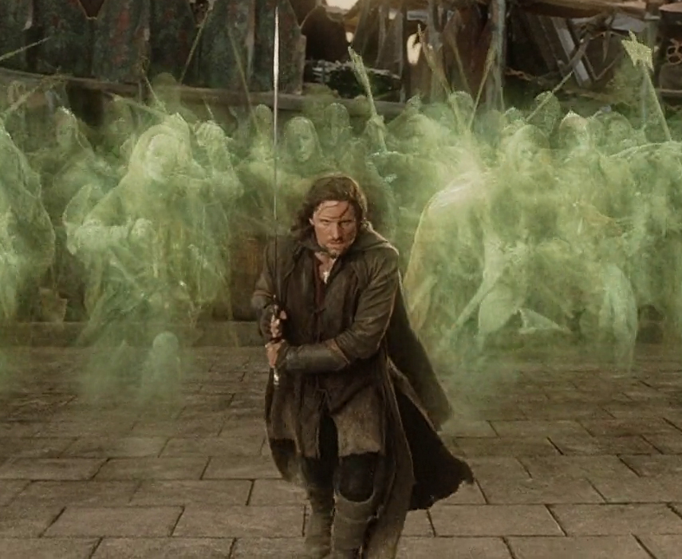
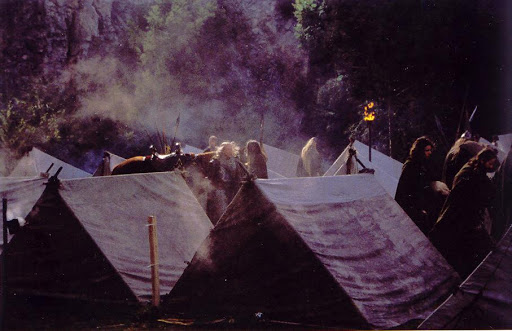
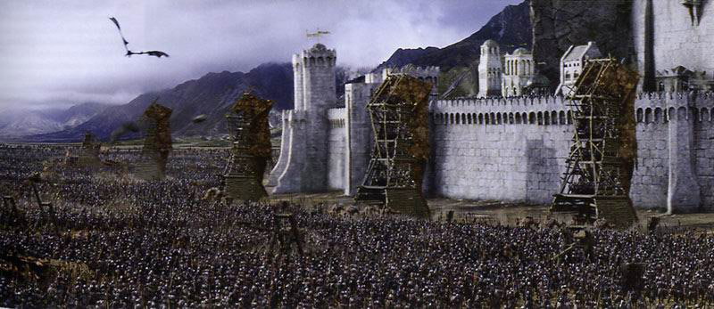
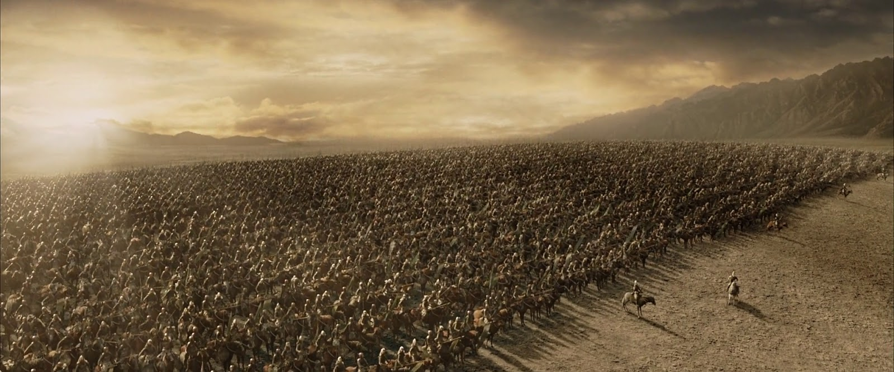
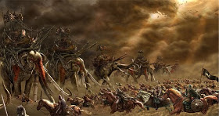
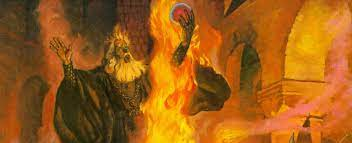
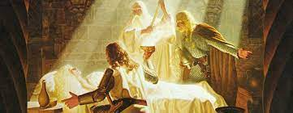
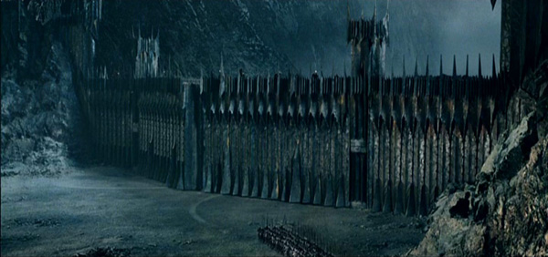

Después de un largo y veloz viaje, Gandalf y Pippin llegan a la gran ciudad de Minas Tirith por la mañana temprano y tienen una audiencia con Denethor, el Señor y Senescal de Gondor, padre de Boromir y Faramir.
Denethor es un hombre de gran poder y linaje, y puede adivinar mucho más de lo que las palabras que uno dicen. Pippin le habla sobre su viaje, y sobre Boromir. Pippin presta juramento de fidelidad al Senescal de Gondor.
Gandalf marcha a una reunión para enterarse de las últimas noticias, y Pippin sale a explorar la ciudad. Se encuentra con Beregond, soldado de la guardia de la ciudad que ha sido enviado para acompañarlo y ayudarle en lo que necesite. Hablan sobre Gondor y sus costumbres, del viaje de Pippin y las tierras distantes que habia visto, y de la guerra que está a punto de comenzar, y en que Gondor parece no tener esperanza.
Despues, cuando Beregond debe volver a su puesto, Pippin busca a su hijo, Bergil, y juntos van a las puertas de la ciudad para ver los ejércitos de Gondor que llegan para defenderla. Por la tarde Pippin vuelve a su habitación, al igual que Gandalf que parece angustiado y preocupado.
Poco después de la salida de Gandalf, la compañía del rey Théoden se encuentra un grupo de Montaraces del Norte que se unen a ellos: son el pariente de Aragorn, acompañado por Elladan y Elrohir, los hijos de Elrond.
Montan juntos hacia el Abismo de Helm, donde Aragorn usa la palantír y se muestra a Sauron. Decide ir tan rápidamente como sea posible a Gondor. Por eso tomará los Senderos de los Muertos acompañado por Legolas, Gimli, los hijos de Elrond y los Dúnedain.
Théoden, que toma a Merry como su escudero, escogerá un camino más largo y tardará varios días en organizarlo todo. Entretanto Aragorn y su compañía montan hacia Edoras y Sagrario en un camino directo. Allí Éowyn intenta persuadirlos de su idea o sino la dejen ir con ellos, pero Aragorn no lo permite.
A la mañana siguiente la compañía marcha a traves del Sendero de los Muertos: un tipo de túnel que lleva al otro lado de las Montañas Blancas al sur de Rohan. Los muertos son los espíritus de personas de antaño no cumplieron el juramento que hicieron a Isildur, y este los maldijo a no encontrar paz hasta que el juramento se cumpliera. Ahora Aragorn, heredero de Isildur, los convoca para ayudarlo en la guerra y cumplir así su juramento. La compañía, seguida por una gran horda de muertos, marcha al este, hacia Pelargir.
Entretanto Théoden y su ejercito montan hacia Sagrario, donde el resto del ejército de Rohan está acampado. Éowyn los espera allí y les dice que Aragorn se ha ido por el Sendero de los Muertos; poco conocido por los Rohirrim, sólo saben unas leyendas aterradoras y están seguros de que no volverán a ver a Aragorn.
Un jinete de Gondor llega al campamento con palabras de Denethor sobre la inminente batalla en Minas Tirith, y pidiendo a los Rohirrim, quienes han sido aliados de Gondor durante siglos, su ayuda. Théoden se prepara para partir al día siguiente y decide ir abiertamente por la llanura.
Decide que Merry permanezca en Edoras, donde Éowyn guiará a la población hasta la vuelta de su rey. Un jinete joven llamado Dernhelm ofrece en secreto a Merry llevarlo en su caballo a Gondor, y este acepta la oferta alegremente.
A la mañana siguiente, cuando la Oscuridad ya había cubierto el cielo, Gandalf lleva a Pippin con Denethor, y recibe el uniforme de la Torre. Después se encuentra con Beregond y charlan durante algún tiempo en las murallas de la ciudad.
Esa misma tarde llega Faramir a Minas Tirith, escapando del Nâzgul alado que estaba amenazándolo junto a otros soldados. Pippin acompaña a Gandalf y a Faramir a una reunión con Denethor. Faramir informa sobre los eventos en la frontera, y sobre su reunión con Frodo. Denethor está disgustado con sus acciones, y preferiría tener el Anillo en la ciudad.
Al día siguiente Faramir deja la ciudad de nuevo para ayudar en la defensa de Osgiliath. Los defensores no pueden resistir el ataque del enemigo y los supervivientes se retiran a Minas Tirith, dejando Osgiliath en manos del enemigo. Faramir llega el último, herido por un dardo envenenado.
El numeroso ejército enemigo, comandado por el Capitán de los Espectros, llega a Minas Tirith y empieza su asedio: excavan trincheras de fuego y preparan grandes artefactos de guerra. Denethor se derrumba al ver a Faramir mortalmente herido, y abandona toda esperanza por defender la ciudad. Se retira a la casa de los reyes para incenerarse junto con su hijo. Libra a Pippin de sus servicio, y este va en busca de Gandalf para impedir a Denethor cometer una locura.
Mientras tanto los enemigos atacan las puertas de la ciudad, consiguiendo romperla después de varios intentos. Cuando el Señor de los Nâzgul se enfrenta con Gandalf, los cuernos de los Rohirrim se oyen en la distancia.
El ejército de Rohan marcha rápidamente hacia Gondor durante cuatro días. Una noche Merry escucha a Théoden y Éomer hablar con Ghân-buri-Ghân, jefe de los Hombres Salvajes de los bosques cercanos. Los Orcos parecen haber tomado el camino hacia Minas Tirith, y Ghân les muestra un camino abandonado y desconocido a través del bosque.
Así llegan al campo de Gondor, cuando todos los enemigos están ocupados asaltando las murallas de la ciudad. Cuando los ejércitos de Mordor están atacando las puertas, Théoden da la señal con su cuerno y los Rohirrim lanzan el ataque.
En el primer ataque, Théoden mata al jefe de los sureños. Entonces el Capitán de los Espectros monta en su criatura alada y desciende cerca de Théoden. Su caballo, encabritado por el miedo, cae y aplasta al rey. Sólo Éowyn, disfrazada como Dernhelm, está a su lado en ese momento junto con Merry.
El valor despierta en el hobbit y ataca al Espectro por la espalda, y Éowyn, con sus últimas fuerzas, mata al Rey de los Espectros. Antes de que Théoden, agonizante, diga adiós a Merry, saluda a Éomer como nuevo rey.
Los defensores restantes de Minas Tirith van en ayuda de los rohirrim. El Príncipe Imrahil se encuentra a los hombres que llevan a Théoden y a Éowyn, y avisan de que ella todavía está viva, y la envían a los sanadores. Las fuerzas de Rohan y Gondor están perdiendo la batalla contra los grandes ejércitos de Sauron.
Entonces una flota de barcos de Umbar llegan por el Anduin, y para sorpresa de los sitiadores, los barcos no están guiados por los Corsarios, enemigos de Gondor, sino por Aragorn y su compañía, así como el ejército de Gondor del sur. Ahora la batalla se vuelve a favor del Oeste, y a finales del día ningún enemigo permanece vivo en el campo del Pelennor.
Pippin encuentra a Gandalf y lo lleva a la Casa de los Reyes para impedir que Denethor incinere a su hijo Faramir vivo. Allí encuentran a Beregond, al que Pippin había advertido de la locura de Denethor. Gandalf intenta convencer a Denethor de que la hora y la manera de la muerte de uno no se pueden escoger, y que su deber es llevar la defensa de la ciudad. Pero Denethor cree firmemente que el poderío de Mordor es ahora demasiado grande y todo está perdido.
Beregond le impide matar a Faramir, entonces Denethor agarra una antorcha y la tira en el montón de madera preparado allí, incinerándose. Parece que una palantír, guardada en la Torre Blanca en secreto, era el origen de su locura, porque había mirado a menudo en él y había visto la magnitud de los ejércitos de Mordor. Después llevan a Faramir a las Casas de Curación, aunque no se sabe si alguna vez despertará de nuevo.
Merry, totalmente exhausto, siguió a los portadores del cuerpo de Théoden, pero se había apartado del grupo. Es encontrado en el campo de batalla por Pippin, que lo lleva a las Casas de Curación. Allí Gandalf oye a una mujer anciana una leyenda que cuenta que las manos de un rey son las manos de un sanador; y va en busca de Aragorn que todavía podría tener esa habilidad.
Aragorn decide no mostrar su majestad hasta que la guerra con Mordor haya terminado, pero ante todo debe ayudar a los heridos. Primero cuida de Faramir, Éowyn y Merry. Faramir fue alcanzado por una flecha envenenada, y ahora es afectado por la "respiración negra" del Nâzgul; y Éowyn y Merry estaban entrando en la oscuridad después de enfrentarse con el Capitán Negro. Aragorn los sana con una hierba llamada athelas, y se despiertan, aunque todavía tendrán que descansar durante varios días.
A la mañana siguiente, Legolas y Gimli entran en la ciudad y se encuentran con el Príncipe Imrahil; entonces visitan a Merry y Pippin en las Casas de Curacion. Hablan sobre el paso del Sendero de los Muertos: cómo marcharon durante varios días, y Aragorn llamó a los muertos para luchar junto a él; cómo capturaron la flota de Umbar en Pelargir, y cómo navegaron por el Anduin para unirse a la batalla de los campos del Pelennor.
Entre tanto, hay una reunión de los capitanes: Gandalf, Aragorn, Imrahil, Éomer, y los hijos de Elrond. Gandalf presenta su plan para marchar hacia la Puerta Negra de Mordor: desafiar en una batalla a Sauron para así vaciar Mordor y volver toda su atención hacia ellos. Esto aumentaría las oportunidades de Frodo para localizar Orodruin y destruir el Anillo. El plan se acepta, y un ejército de siete mil hombres parte hacia allí.
El ejército marcha hacia las Puertas de Mordor, los heraldos proclaman la llegada del Rey y desafían a las fuerzas de Mordor. Algunos hombres quedan como guardia en la Encrucijada y otros retroceden asustados. Nadie contesta al desafío, salvo un pequeño ejército de orcos y gente del Este a los que derrotan fácilmente.
A distancia de la Puerta, el ejército desafía de nuevo a Sauron para salir y enmendar sus acciones. Entonces llega un embajador de Mordor, la Boca de Sauron, un hombre que había entrado al servicio de Sauron y se había convertido en el Lugarteniente de la Torre Oscura y un hechicero poderoso.
La Boca declara que un espía fue capturado, mostrando los ropajes de Frodo, y los Capitanes del Oeste deben rendirse a las demandas territoriales de Sauron. Gandalf se niega a los términos tomando las propiedades de Frodo. Entonces la Boca, asustada, retrocede hacia la Puerta. Finalmente Sauron activa su trampa: las Puertas se abren y un enorme ejército se lanza contra ellos. Pippin mata a un gran troll, pero cae inconsciente.
Final